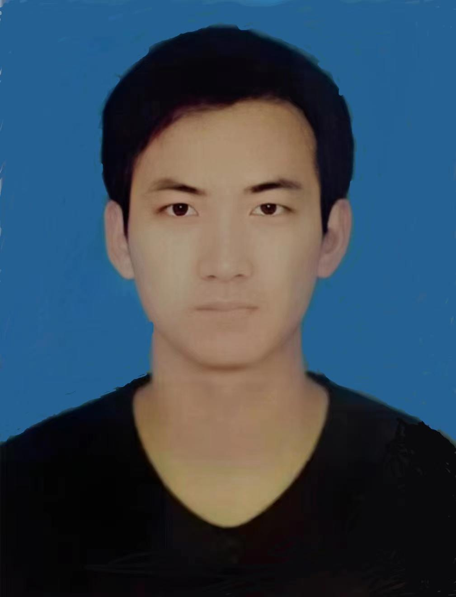

Hello, I am xushasha. 
I am now studying for my master's degree in BME in School of Physics at Peking University
I am looking for research assistant job opportunities in the field of medical image processing
I am interested in multimodal medical image registration and segmentation
please contact me via my email: xcczbl@stu.pku.edu.cn or wechat: ic9832419xcc
Below is the optimization of the projects I have completed